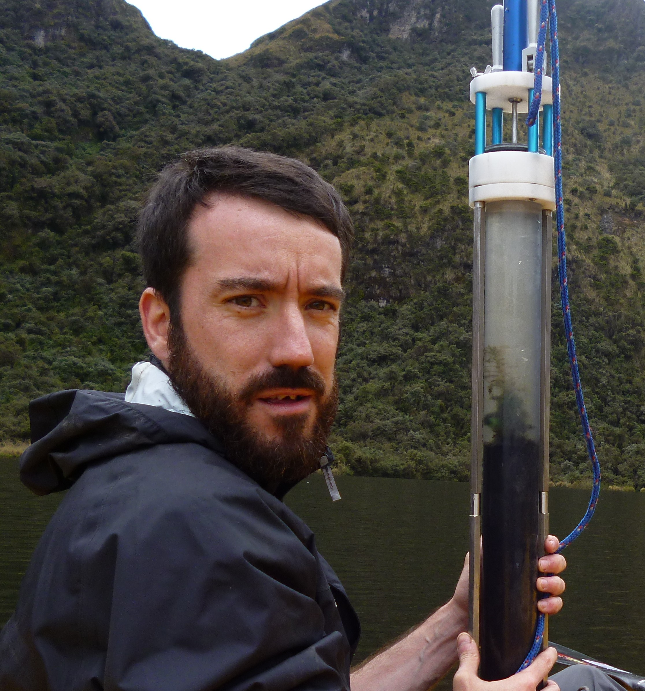
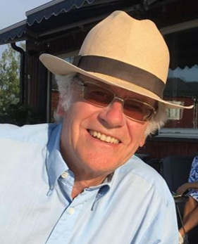

COST Action Steering Committee
Chairs
Dr Thomas Giesecke 

- 🏦Utrecht University, NL
- 📞phone: +31302531034
- 📬email: t.giesecke(at)uu.nl


Dr Sandra Nogué Bosch

- 🏦UAB Barcelona, ES
- 📞phone: 935814669
- 📬email: sandra.nogue(at)uab.cat

Leadership & Staff (Alphabetical order)
Dr Xavier Benito 

- 🏦Institute of Agrifood Research and Technology (IRTA), Spain
- 📬email: xavier.benito(at)irta.cat

Prof Richard Bradshaw 

- 🏦 University of Liverpool, UK
- 📬email: Richard.Bradshaw(at)liv.ac.uk

Dr Sandra Olivia Camara-Brugger
Prof Elisabeth Dietze 

- 🏦 University of Göttingen, Germany
- 📬email: edietze(at)uni-goettingen.de

Dr Stefan Engels 

- 🏦Royal Holloway University of London, UK
- 📬email: Stefan.engels(at)rhul.ac.uk

Dr Walter Finsinger 

- 🏦 Institut des Sciences de l’Evolution de Montpellier (ISEM), CNRS, France
- 📬email: walter.finsinger(at)umontpellier.fr

Dr Graciela Gil-Romera 


- 🏦 Pyrenean Institute of Ecology (Spanish Research Council), Zaragoza, Spain
- 📬email: graciela.gil(at)ipe.csic.es

Dr Petr Kuneš 

- 🏦 Charles University, CZ
- 📞phone: +420 221 961 667
- 📬email: petr.kunes(at)natur.cuni.cz

Dr Ondřej Mottl

- 🏦Department of Botany, Faculty of Science, Charles University, Prague, Czech Republic
- 📬email: ondrej.mottl(at)gmail.com

Back to top